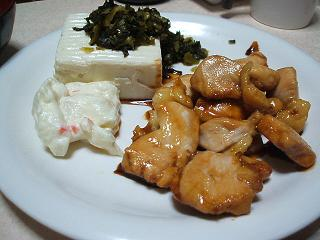

日々、想ふ
〜過去感じたことがつれづれと〜
（できるだけ最大化してお読みください）
日々、想ふ
家に引きこもってました。７/３１
明日から本格的テストラッシュですよ、タケユキです。
てなわけで家で勉強。
昼に豪雨になってて洗濯物を緊急救助。
夜にサッカー見てＫ−１見てました。
曙弱すぎじゃない？
俺でも勝てる、とか言うつもりはないですが。
というわけで特にこれといったこともなく過ぎていった一日でした。
そんな、７月最後の日。
明日から８月に入ります。
今日のテスト勉強：解けるかあんなもん。
Procrastination is....７/３０
家で勉強してたんだけど途中でやってられなくなって
バイクで現実逃避、ちょっと伊丹のあたりを走ってました。
走ってる時は風が気持ちよくていいんだけど
信号待ちで止まった時に、
照りつける強い日差し、
さらにアスファルトからもはね返される日光、
エンジンから放出される熱、
暑い。
走行中は天国、信号待ちは地獄、
何度信号無視しようとしたことか、
でも信号無視はしてません。
体は熱されても頭は茹だってはおりません冷静な男、タケユキです。
というわけで多少現実逃避をしてみたわけですが
夜、友達のブログを読んで少し自分を客観的に見直すことがあった。
最近はけっこうたくさんの大学の友達や地元の友達が
ホームページやブログなんかで日記を書いてて
日々顔を合わせることがなくても何やってるかがわかったりする。
インターンを考えてる友達がいる。
アメリカに留学してる友達がいる。
チャリで京都から北海道まで旅してる友達がいる。
１年間スペインへの留学を決めた友達がいる。
勉強にしろ、趣味にしろ、本気で取り組んでることがある人がいる。
今自分が本気で取り組んでいること？
もちろん今一番大事なのは勉強、
やらないといけないのは分かっているけど分かっているだけ、
高校生のときと進歩なし。
でももういい加減やめよう、
先延ばしにしてもいい事は何もない。
今日の決意：せめてあと一週間は続ける。
ふう。７/２９
今日は先週中間テストがあった科目の期末テストがありました。
とりあえず答案は７割ばかり埋めました、
埋めただけ・・、合ってる保証なんてどこにもありません、タケユキです。

今日の晩ご飯の献立はポテトサラダ、冷やっこ、鳥の照り焼き。
鳥の照り焼きはみりん・料理酒・砂糖・醤油で鶏肉を焼くだけで超簡単。
冷やっことかは調理するとは名ばかりで
パックから出して皿に盛るだけ。
全工程１０分ほどの簡単夕食。
晩ご飯食べながらドラえもん見てた。
見てて改めて実感したのが声の変わりよう。
全然ドラえもんの声がドラえもんぽくなかったりで
テレビ画面から目を離してたら誰が喋ってるかいまいちわからんまま。
・・・へっくし。
クーラーをつけると寒くて
切ると暑い。
クーラーつけたり消したりを今日だけで５回は繰り返してるんだけど
もうちょっと適正温度を保ってくれまいか？我が家のエアコン。
今日の晩ご飯：あと納豆も食べました。
不規則生活。７/２８
明日は期末テスト、タケユキです。
たぶんダメダメな気がするけどダメもとで。
今日の晩ご飯：今から(深夜１時)食べます。
今日は。７/２７
女心がいまいち分からん、タケユキです。
台風の影響で雨だと思ってたら夜のうちに
日本列島から離れていったみたいで余裕で晴れてたみたいですね。
もうぼちぼちテストなんで家でテスト勉強。
過去問を手に入れてきてそれをとりあえず解いてみる、
じゃなかった、解こうとしてみる。
無理。
言い訳じゃないけど問題が授業でやってない内容だと思うんだけど。
なんやねん平均伝送遅延時間て。
授業でその求め方も考え方も説明してないだろ。
俺が授業聞いてないからかもしれませんが。
前にも授業の内容とテストの問題が全然リンクしてないような科目もあったけど
それで簡単になってるのならまだしも
難しくなってたら困る。
それにしてもこれは確か必修科目。
どないしよ。
とまぁよくわからないやり場のない怒りを持って一日を過ごしてましたよというお話。
今日の寝酒：ディタをオレンジで割って一杯。
台風接近中につき。７/２６
今日ちょっと勉強で分からないところがあって先生に質問してました。
学校で先生に質問したって言ったらふーんって感じなんだけど
よくよく考えたら大学で授業してるのは教授とか助教授なんだよね。
俺が質問しに行った人は教授のほうでした。
大学教授ですよ大学教授、普段全然意識しないけど偉い人なんですよね、
でも腰が低くて質問にも丁寧に答えてくれました
別に教授になりたいとかじゃないけど少し尊敬の気持ちを持った。
意識してなかったけどすごい恵まれた環境にいる気がした。
遅すぎな気もするけどもう俺は大学３年ですよ、タケユキです。
というわけで勉強でもがんばろうと思う。
台風通り過ぎるみたいで天気悪くて風強いし
なによりお金ないしなにもできんし。
明日明後日と授業もないので引きこもってみますか。
今日の家庭内事情：食べるものなくてやせ細る確率８０％。
後先考えないからこうなる。７/２５
バカです、死んで詫びろってことですかね、タケユキです。
先月受けたTOEICの結果が返ってきました。
３月に受けた結果の方がよかったです。
先月受けた分は無意味だってことです。
検定料に六千円ばかし払いました。
今財布の中に千円札が一枚しかありません。
貯金は300円しかありません。
こんなバカはどうしたらいいですか。
今日のリンク：
アドリアーナ。サッカー＆ネットで金稼ぎブログらしいですよ。
楽しくなければテレビじゃないもん２。７/２４
まだ25時間テレビ見てます、タケユキです。
午後１８時。俺の唇はいつも青くない。
**************************************************************
エンディングまで25時間テレビを見てみたけど特にこれといった感想はありません。
というかなんだ俺のこの週末は。
寝ます。
今日の長風呂：一時間くらいだけど。
楽しくなければテレビじゃないもん。７/２３
今２０時です２５時間テレビが始まりました、タケユキです。
今オープニングやってる最中ですよ。
２５時間テレビって言っても所詮いろんな番組・企画ひとつにまとめて
どうだこれで２５時間だみたいな風味であるのは否定のしようのない現実ですが
特にやることもないので体力の続く限り見続けてみます。
**************************************************************
こういう番組でありがちなマラソンは今回堀江ライブドア社長が
六本木からお台場に向けて走るみたいですよ。
**************************************************************
なんか進行が微妙でどこまでがヤラセなのかいまいちわからん。
**************************************************************
このテレビ局乗っ取りのドラマの犯人役が堀江社長だったらおもろい。
**************************************************************
ふとバイクのハンドルを替えたくなった。
**************************************************************
やっとおもしろくなってきた深夜１時半。
**************************************************************
そういえばここ最近俺は目覚まし時計と化しています。
**************************************************************
てか１行日記みたいになってきたな。
**************************************************************
かま騒ぎが始まった。ビデオ撮りながら見てる俺っていったいなんだ？
すでに爆笑の予感。
**************************************************************
出演者多すぎて何言ってるかいまいち、統率感がない・・。
**************************************************************
午前５時、夢の中へ・・。
巡ってきたチャンス。７/２２
今日は選択科目の中間テストが１つありました。
授業内容がわけわからんすぎてて、
選択だしとりあえずダメもとでうけてみようと思って受けたら
おいおいおい解ける解ける。
全問完答して早々退出してやったと思ってました。
その後一緒にテスト受けた友達にテストの答えについて
ちょっと話したら、
あれ？おいおい俺の答え違うんじゃねえのっていう事態に。
あーあ、ミスったかなーでもまあいいや選択だしって思って、
家に帰ってちょっと気になったから教科書見直したら
俺がテストに書いた解答の流れは合ってるような気もしてきた。
結局どっちなんだと深く悩んでいたら
自分がテストに書いた答えがどんな答えだったか分からなくなってきました。
まぁいいや結局のところ選択科目だし取れたらラッキーということで、タケユキです。
今日の夕方の一番大きなニュース、奥菜恵の離婚。
IT企業の社長と結婚してから1年半後の破局。
社長婦人から独身の女性に戻ったわけです。
要するに俺の言いたいことは
ついに俺にチャンスが巡ってきた気がするので
腹筋を鍛えてその時に備えようと思います。
今日の一言：あと必要なのは出会う機会だけ。
その差わずか４歳。７/２１
図書館行って勉強しようと思ったけど
テストも近いし人多いだろうと思って家でごろごろしてました、タケユキです。
今日は塾の夏期講習が始まりました。
始まったって言ってもいつものように授業をしてました。
授業も終わりさて帰ろうかとチャリ乗ろうとしたら
たまたまその教えてる子のおかあさんにはち合わせ。
塾講だから保護者と会う機会なんかなかったからちょっと緊張した。
「どうも娘がお世話になります〜」
「いえいえこちらこそ〜。よくがんばる子で」
いくら先生の立場とは言っても
２１歳の俺が１７歳の教え子に「がんばる子」って言うのは違和感でしたよ。
今日の勉強：明日のテストちょっとがんばってみようかと思う。
言いながらもまた間違える。７/２０
今日は英語のテストがあって、
とりあえずできないままテストが終わって、
午後に眠くなってきたので光熱費の節約のために
昼寝をしに図書館に行ったんだけど
昼寝スペース（ソファー）が空いてなくて
何もせず図書館から帰ってきましたよ、タケユキです。
というわけでとりあえずテストを除いて
水曜・木曜は授業がなくなりました。
少し気持ちも軽くなり家で晩飯食ってたら
お茶がなくなって、お茶がなくなったから作ろうと思ったけど
麦茶のパックがちょうど切れてて
三ツ矢サイダーもなくなって、
もうどうしようもなくなってきたので
深夜二時に飲み物を求めてうろうろさまよい歩いてました、タケユキです。
つらつらと今日の日記を書いてはみるも
冒頭の書き出しを二回繰り返すような初歩的なミスをするあたり
睡眠不足ってことですよね寝ますおやすみなさい、タケユキでした。
今日の決意：明日も朝は早起きしよう。
ちっぴちゃんへ捧げる写真。７/１９
今日はバイクのメンテやってました。
あんまりたいしたことやる技術＆知識ないんで
ブレーキとチェーンの清掃とチェーンオイルを挿したくらいだけど、
夏は少しバイクの勉強でもしてみようか、タケユキです。
今日は行事かなにかでうちの学部だけ休みになるはずだったのに
うちの学科の授業で使う教室は使えるってことで
なぜか１コマだけ授業があった。
それから帰ってきてバイクのメンテやってたわけです。
それでふと気づいたら明日は英語のテストの日。
再履修の英語のテストの日。
留年か無事単位取得か。。。。
今夜のご注文は・・・どっち！？
・・アホなこと言ってないで単語覚えます。
今日の私信：これが小・中学生の時に取ったメダル＆トロフィー。
ほんとすいませんでした。７/１８
昨日メール２通しかやりとりしてないっていいましたが
実は昨日の朝にメールが一通来てて
寝ぼけてるうちに無意識にメールを開いた後にまた寝たらしいんですね。
そうなると俺はメールを読んだって記憶がないまま
そのメールは既読メールとして受信ボックスに埋もれてしまうわけです。
それにしても俺メールこねえなぁと思ってふと
受信ボックスを開いて受信メールを意味なく見てたら
そんな見覚えのないメールが来てたことに気づいたわけです。
この時が今日の夕方１７時、
つまりメールがきてから３０時間強放置してたことになります。
ほんとすいません、タケユキです。
といきなり謝罪から始まった今日の日記ですが
ニューシングル出した大塚愛は髪切って
おいおいこれはかわいすぎだろと思って過ごした海の日になりました。
海には行ってません、海の日だけど。
とにかく今の大塚愛はかわいい。
女の子の髪は長い方が好きなほうだったけど
ああいう髪型もたまんないっすね。
今日の日記：かわいけりゃなんでもいいってわけでもありますが。
あまり変わらない気もするけど。７/１７
最近よく急な呼び出しの電話とか
あまりうれしくない相手からの電話がかかってきそうで
いっそこのことケータイの電源を切って生活をしようかと本気で思う、
一人でいる時間はとことん一人でいたい男、タケユキです。
ケータイってのは人と人をつなげる便利な道具ではあるけども
その分ケータイに束縛されやすくなったというか。
正しくはケータイの向こう側にいる人にですが。
簡単に連絡がつく分急にその日の予定が変わったり、
俺は臨機応変な対応を迫られるのが精神的に苦手なもので、
たまには何日かケータイのない生活をしてみようかなと思う。
日ごろどれだけケータイに振り回される生活をしてるんだろうか。
とかいう俺が今日やりとりしたメールは二通だけですけど。
今日のバイト：これで今月当分休みです。
興味ある人は試してみて。７/１６
お昼前に届いたおかんからの宅配便に入ってた缶詰は
いわしの缶詰じゃなくてさんまの缶詰でした。
やっぱり母親ってのはわかってるものですね、タケユキです。
今日０時過ぎくらいにやってたYOUとかMEGUMIが出てた番組で
ケータイを使った浮気調査のやり方ってのをやってた。
いくら浮気をする人間でも受信メールとか着信履歴くらいは
ちゃんと隠すだろうよ、と。
それをふまえた上で相手の尻尾を捕まえる方法
として紹介されてたのが
最近のケータイについてる予測変換機能を使った方法。
相手のケータイで「す」を入力させて予測変換機能を使います。
ここに出てきた予測一覧で「好き」って言葉が出てきて、
なおかつ恋人である彼女(彼氏)が好きってメールで言われた覚えがなければ
相手は別の人に「好き」っていうメールを送っているんじゃねえのか
おいどうなんだコノヤロウ、という理論で調査をするってわけです。
メールとか履歴とかと違って消しにくいし
予測変換とは盲点をついてきたなぁと思って
ためしに自分のケータイで「す」を入力して変換してみた。
でてきた言葉は、
涼しいスターウォーズスペシャルステージ
浮気調査されても別に大丈夫だろうけど
俺はいったいどんなメールしてるんだ？
今日の夜３時：バイクで走ってました。